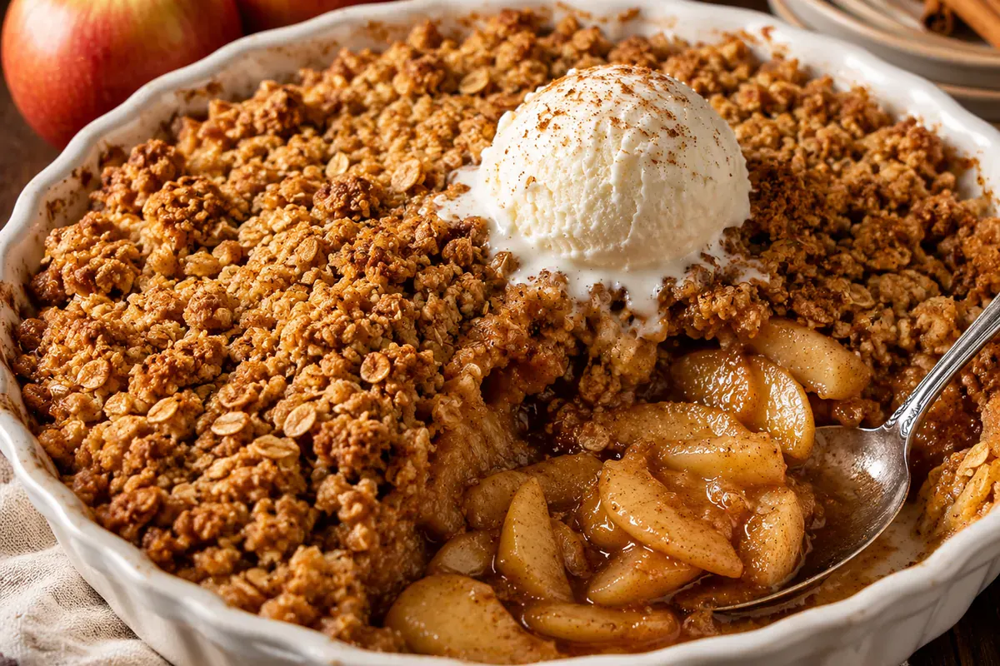

Warm Cinnamon Apple Crisp

Illustrative image.
Apple crisp is the least fussy of the autumn desserts and the one that asks the least of you. Sliced apples go into a buttered dish with sugar, lemon and cinnamon, a loose oat crumble is scattered over the top, and the whole thing bakes until the fruit bubbles up around the edges of the pan.
There is no rolling pin, no chilling and no lattice to worry about. The topping bakes into a mix of crisp edges and soft buttery middle, and the apples keep enough structure to taste like fruit rather than jam. An eight-inch square pan makes six generous servings with leftovers for breakfast.
Ingredients
- 6 medium Honeycrisp or Granny Smith apples, peeled and sliced
- 1 tbsp fresh lemon juice
- 1/2 cup granulated sugar
- 1 tsp ground cinnamon
- 1 cup old-fashioned rolled oats
- 1/2 cup all-purpose flour
- 1/2 cup packed light brown sugar
- 1/2 tsp ground cinnamon
- 1/2 cup cold unsalted butter, cubed
Instructions
- Preheat oven to 350°F (175°C) and grease an 8-inch square baking pan.
- In a large bowl, toss the sliced apples together with the lemon juice, granulated sugar, and cinnamon until well coated. Pour into your greased baking dish.
- In another bowl, mix the rolled oats, flour, brown sugar, and cinnamon. Use your fingers or a pastry cutter to work the cold cubed butter into the mixture until it turns crumbly.
- Scatter the oat topping evenly across the apple layer. Bake for 35 minutes until the apples are completely tender and bubbling, and the top is structural, crispy, and dark gold. Serve warm with vanilla ice cream!
Why this recipe works
Two details separate a good crisp from a soggy one: apples that stay firm and a topping that is cold when it meets the oven. Honeycrisp holds its shape and brings its own sweetness, while Granny Smith keeps the filling sharp against the sugar. Cold cubed butter melts slowly inside the crumble, leaving pockets of steam that make the top shaggy instead of flat.
Tips for success
- Cut the apples into slices of roughly the same thickness, about a quarter inch, so they soften at the same rate.
- Work the butter into the oats and flour with your fingertips until the mixture looks like coarse crumbs with a few larger lumps left in.
- Spread the topping loosely over the fruit instead of pressing it down. The gaps let steam escape and keep the crust crisp.
Substitutions that work
- Golden Delicious, Braeburn or Jonagold all work in place of Honeycrisp. Avoid Red Delicious, which turns soft and bland in the oven.
- Old-fashioned rolled oats give the best texture. Quick oats bake up sandy and steel-cut oats stay hard, so neither is a good swap.
- For a gluten-free version, replace the half cup of flour in the topping with a gluten-free baking blend or fine oat flour.
Storage and make-ahead
The crisp is at its best within a few hours of baking, while the topping still cracks under a spoon. Covered at room temperature it softens overnight but tastes fine; ten minutes at 300 F brings the top back. Baked portions freeze well for up to two months and reheat from frozen.
Serving suggestions
Serve it warm with vanilla ice cream, cold pouring cream or thick yogurt. It makes a good ending to a roast chicken dinner and an even better breakfast the next morning, cold, straight from the dish.
Frequently asked questions
Can I assemble apple crisp ahead of time?
Yes. Build it up to a day ahead, cover the dish and refrigerate, then bake it straight from cold and allow five to ten extra minutes in the oven.
Why did my apple crisp turn out watery?
Apples release a lot of juice as they cook. Tossing the slices with the sugar and a tablespoon of flour helps thicken that juice, and there is no need to add any liquid to the filling.
Do I have to peel the apples?
Peeling gives the softest, most even texture. Unpeeled apples keep more colour and a little more bite, so either is fine as long as the slices are thin.